1. EP03-SH01
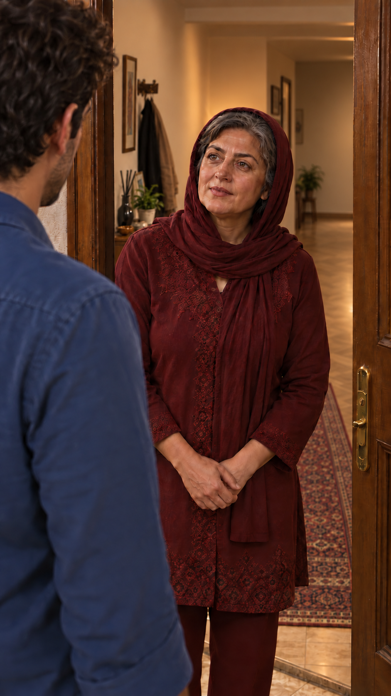
متوسط مادر ایستاده داخل آستانه از سمت سامان؛ دوربین ثابت؛ غافلگیری گرم۲/۵؛ نگاه به چشم سامان ایستاده بیرون؛ فرهاد در پذیرایی خارج قاب؛ مادر ایستاده استقبال میکند؛ مادر و سامان همچنان ایستادهاند و هدایت پس از سلام است
متن و بازی و وضعیت همین نما
2. EP03-SH02
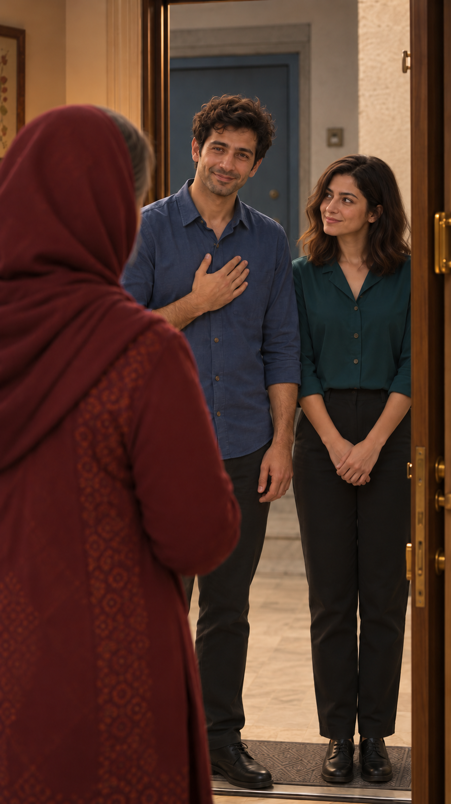
متوسط سامان و نازلی از روی شانهٔ مادر ایستاده در آستانه؛ ثابت؛ احترام و قدردانی۲/۵؛ سامان به مادر، نازلی به مادر با لب بسته؛ دست راست سامان روی سینه مانند عکس فعال؛ دو مهمان بیرون، مادر داخل؛ هنوز نشستن شروع نشده
متن و بازی و وضعیت همین نما
3. EP03-SH15
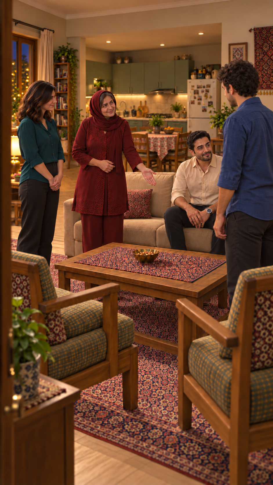
باز مورب از سمت صندلیها، ثابت؛ مادر به سامان خوشامد میگوید و فرهاد را معرفی میکند؛ دیگران خاموش، فرهاد نشسته؛ انتها معرفی کامل، برخاستن در `SH19`؛ چای و سینی نیست
متن و بازی و وضعیت همین نما
4. EP03-SH19
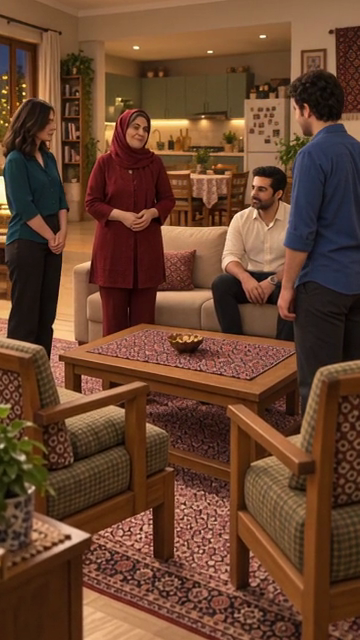
متن و بازی و وضعیت همین نما
5. EP03-SH03
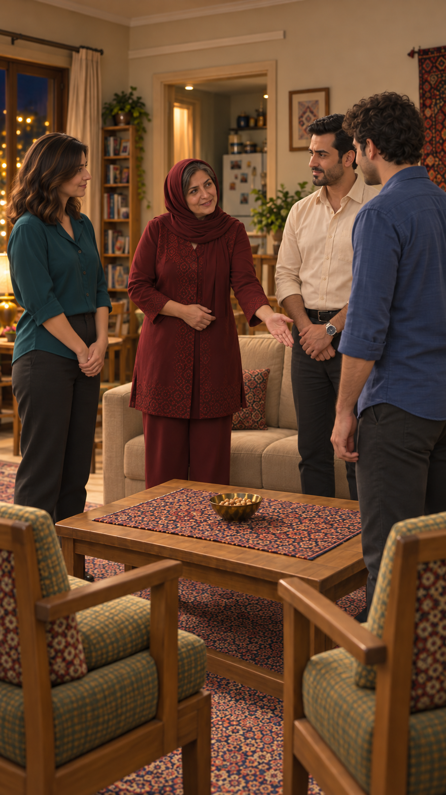
متوسط باز از سمت صندلیها، چهار نفر ایستاده؛ ثابت؛ مهماننوازی سپس هدایت پذیرایی۲/۵؛ نگاه اول سامان و سپس نازلی؛ دیگران لب بسته؛ مادر ایستاده به صندلی راست اشاره میکند؛ دست روی رانِ حالت نشسته اجرا نشود؛ سامان بعد از دعوت مینشیند
متن و بازی و وضعیت همین نما
6. EP03-SH04
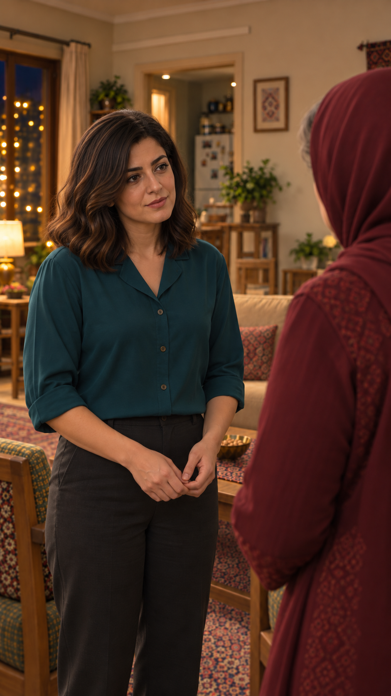
متوسط نازلی ایستاده با سامان در حاشیه؛ دوربین ثابت، خروج از قاب از سمت آشپزخانه؛ همکاری با اضطراب پنهان۲/۵؛ پاسخ طبیعی به مادر؛ پس از پایان گفتار نگاه به مسیر. سامان ساکت؛ دستهای خالی؛ نازلی پس از جمله از قاب خارج میشود، سامان شروع خمشدن برای نشستن میکند؛ برش روی شروع کنش کافی است
متن و بازی و وضعیت همین نما
7. EP03-SH20
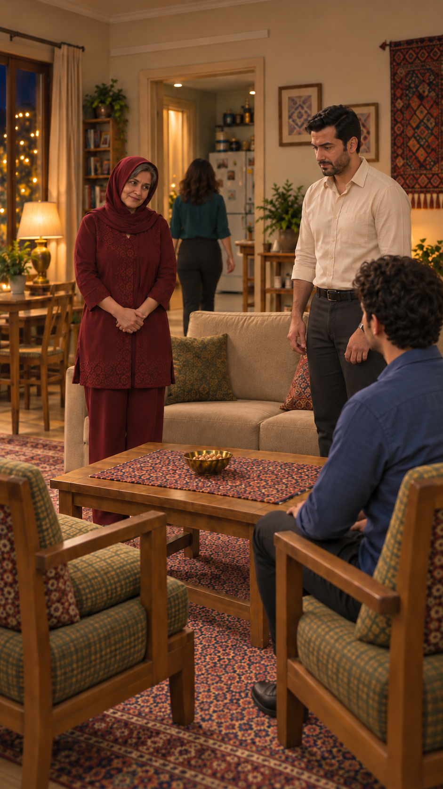
متن و بازی و وضعیت همین نما
8. EP03-SH21
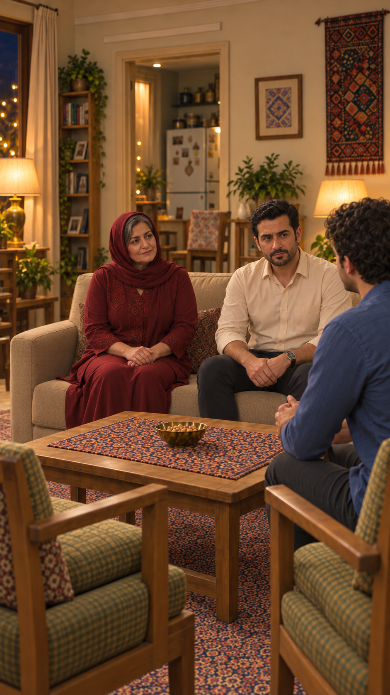
متن و بازی و وضعیت همین نما
9. EP03-SH05
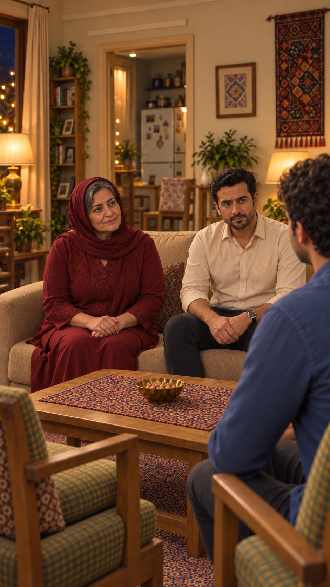
روی شانهٔ سامانِ نشسته به مادر؛ متوسط نزدیک، ثابت؛ توجه محتاط و انتظار۲/۵؛ دعوت آرام به پاسخ، نگاه دقیق به چشم سامان؛ سامان پیشزمینه خاموش، فرهاد و نازلی خارج قاب؛ سامان اکنون نشسته، انتقال منطقی از دعوت قبلی؛ مادر بدن رو به او
متن و بازی و وضعیت همین نما
10. EP03-SH06
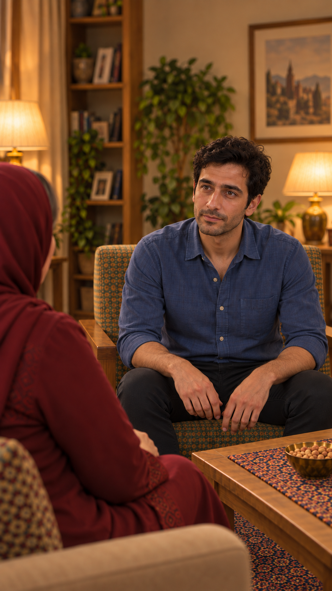
نمای مقابل، روی شانهٔ مادر؛ متوسط نزدیک؛ ثابت؛ علاقهٔ جدی۳/۵ سپس احترام۲/۵؛ خبری و بیاغراق؛ نگاه به مادر. فرهاد خارج قاب شنونده؛ نازلی هنوز در آشپزخانه؛ دستها روی ران، چای هنوز جلوی او نیست؛ صداقت سامان در غیاب نازلی
متن و بازی و وضعیت همین نما
11. EP03-SH16
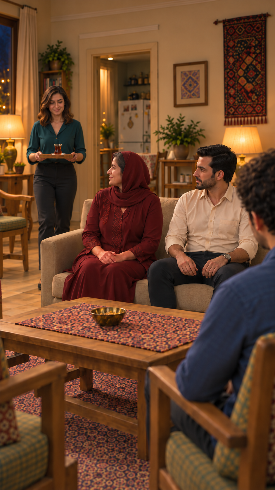
متوسط بازِ جانبی از آشپزخانه تا کنار میز، ثابت؛ نازلی با تمرکز عادی چای میآورد؛ دیگران ساکت، به کار او زل نمیزنند؛ سامان فقط توجه کوتاه؛ نازلی با سینی حاوی یک استکان و نعلبکی وارد میشود؛ با هر دو دست لبههای سینی را دارد و سینی را روی بخش آزاد نزدیک جای خودش میگذارد؛ هر دو دست رها میشوند
متن و بازی و وضعیت همین نما
12. EP03-SH17
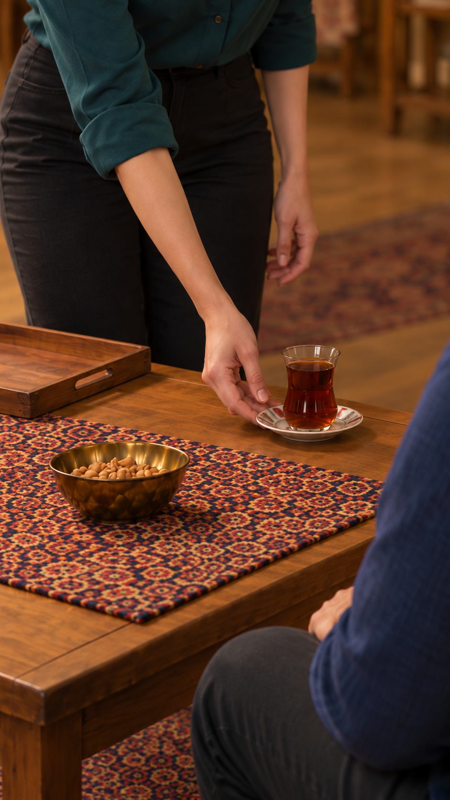
نزدیکِ مورب میز با دست راست نازلی، بخشی از تنهٔ او و زانوی سامان برای شناخت صاحب و مقصد؛ ثابت؛ نازلی دقیق و عادی؛ سامان دست به استکان نمیبرد؛ مادر/فرهاد بدون حرکت وسیله؛ دست راستِ متصل به تنهٔ نازلی نعلبکی را از سینیِ روی میز برداشته و جلوی سامان میگذارد؛ استکان روی نعلبکی میماند. دست برمیگردد؛ برش پس از تماس سالم و آغاز برگشت نازلی به صندلی خودش
متن و بازی و وضعیت همین نما
13. EP03-SH07
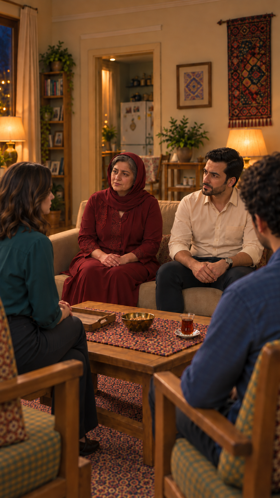
متوسط از کنار شانهٔ نازلیِ نشسته؛ بخشی از مادر کنار فرهاد، دهان مادر در صورت دیدهشدن بسته؛ ثابت؛ بدگمانی۲/۵ برای پرسش دربارهٔ معرفی ناگهانی؛ پرسش مستقیم، نگاه فرهاد به نازلی. نازلی پیشزمینه خاموش؛ سامان خارج قاب؛ نازلی اکنون نشسته؛ سینی خالی روی میز و چای جلوی سامان؛ تغییر محور با اتصال قبلی معلوم است
متن و بازی و وضعیت همین نما
14. EP03-SH08
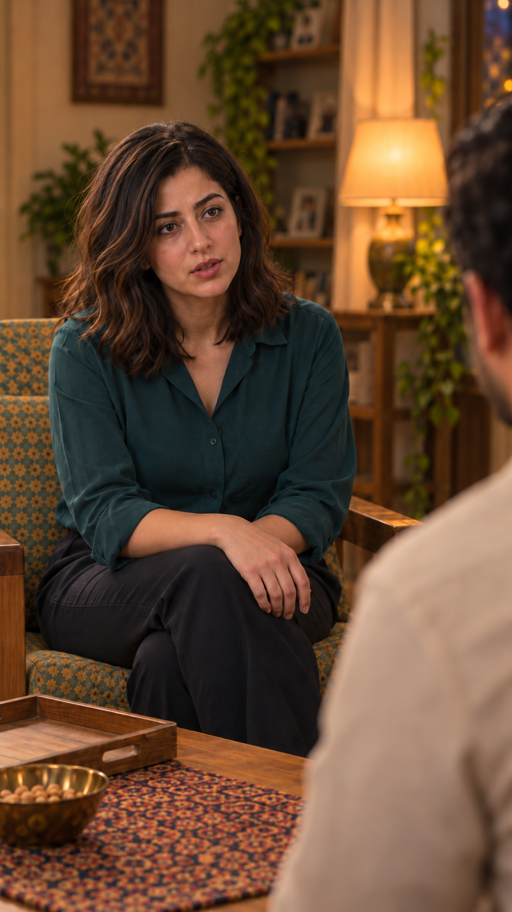
نمای مقابل از کنار شانهٔ فرهاد؛ متوسط نزدیک، ثابت؛ دفاع آرام۲/۵ برای محدودکردن توقع؛ خبری با تأکید کوچک بر قطعینبودن، نگاه به چشم فرهاد؛ دیگران خاموش؛ دستها روی ران؛ نه سینی در دست است نه استکان؛ نازلی اختیارش را روشن میکند
متن و بازی و وضعیت همین نما
15. EP03-SH09
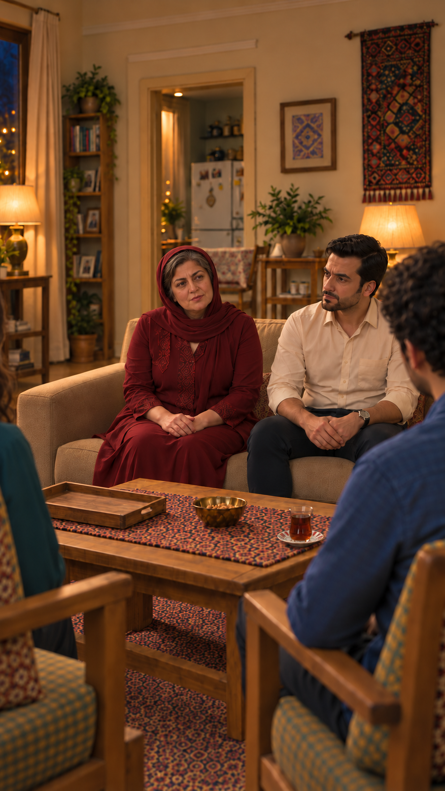
متوسطِ کمی بازتر مادر/فرهاد از سمت سامان؛ ثابت؛ پذیرش۲/۵ سپس پرسش قاطع۳/۵؛ ابتدا نگاه به نازلی سپس سامان؛ فرهاد ساکت و بدون تأیید کلامی؛ با تغییر نگاه، محور اصلی دوباره معرفی میشود؛ مادر عجلهٔ مراسمی نشان نمیدهد
متن و بازی و وضعیت همین نما
16. EP03-SH10
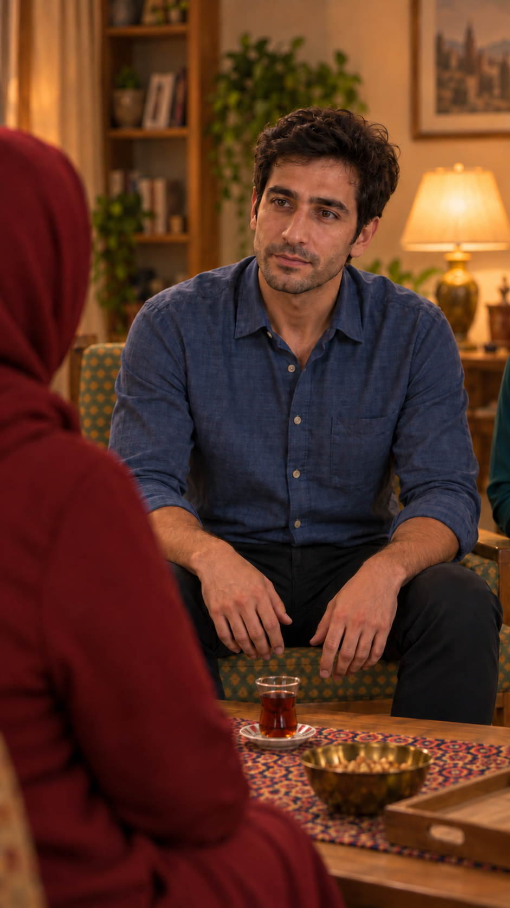
متوسط نزدیک از کنار شانهٔ مادر؛ پیشروی مستقیم بسیار آرام حدود۱۰–۱۵سانتیمتر در طول جمله، بدون تغییر محور؛ صمیمیت جدی۳/۵ برای بیان قصد با حفظ حق انتخاب نازلی؛ شرط اول روشن؛ نگاه کوتاه به نازلی سپس مادر، بدون چرخاندن بدن؛ همهٔ شنوندهها خاموش؛ شروع همان وضعیت نشسته؛ پایان اندکی نزدیکتر برای اهمیت پاسخ، نه تهدید یا قدرتنمایی
متن و بازی و وضعیت همین نما
17. EP03-SH11
متوسط نزدیک از نزدیکِ خط چشم مادر؛ زاویه متفاوت از SH08؛ ثابت؛ نگرانی کنترلشده۳/۵ برای کندکردن پیشروی بحث؛ اصلاحی با تأکید بر فعلاً، نگاه به مادر؛ سامان در صورت حضور حاشیه فقط شنونده؛ دستها روی ران، بدون دستگرفتن سامان؛ مخاطب با زاویه و نگاه عوض شده است
متن و بازی و وضعیت همین نما
18. EP03-SH12
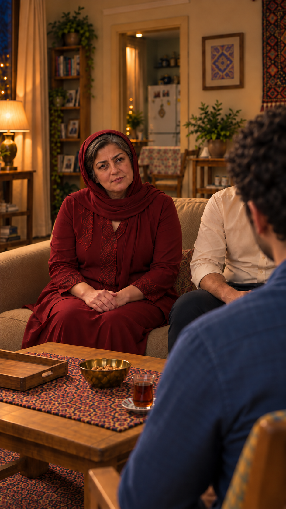
متوسط نزدیک از روی شانهٔ سامان؛ ثابت؛ کنجکاوی محتاط۲/۵ برای فهم اطلاع خانواده؛ پرسش آرام و بدون اتهام؛ نگاه مادر به سامان؛ حالت بدن و دستها مثل SH09؛ طرح اطلاع مادر سامان بدون جهش به مراسم
متن و بازی و وضعیت همین نما
19. EP03-SH13
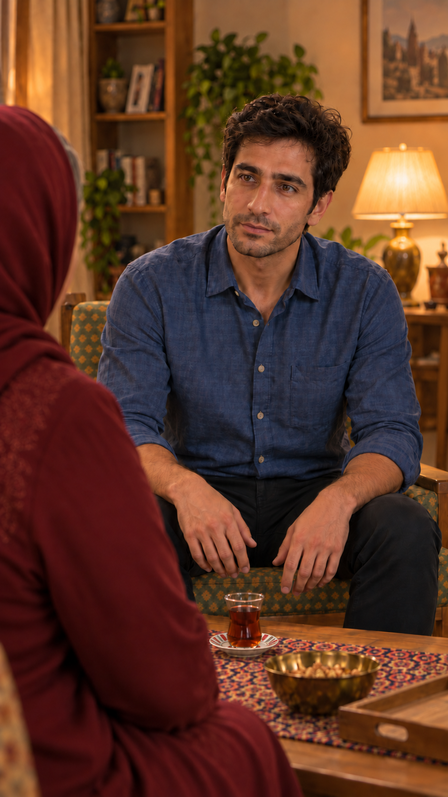
متوسط نزدیک از روی شانهٔ مادر، ثابت؛ کمی بازتر از انتهای SH10 با برش روشن؛ صداقت آرام۲/۵ برای پاسخ واقعی؛ خبری ساده، بدون منمن؛ نگاه به مادر؛ دستها ثابت؛ پاسخ هنوز وعدهٔ آوردن مادر نیست؛ چای دستنخورده
متن و بازی و وضعیت همین نما
20. EP03-SH14
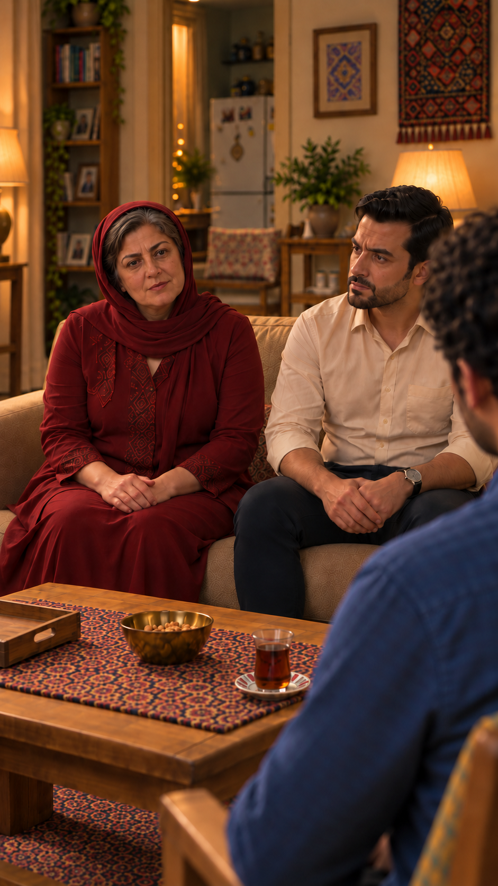
متوسط نزدیک از کنار شانهٔ سامان؛ پیشروی آرام حدود۱۰سانتیمتر روی بخش دعوت، بدون دورزدن؛ جدیت آرام سپس مهماننوازی محتاط۲/۵؛ درخواست نرم و دعوت طبیعی؛ نگاه به سامان؛ فرهاد در نشیمن راست ساکت؛ مادر نشسته و دستها ثابت؛ هیچ تلفن، حلقه یا بلندشدنی اضافه نمیشود؛ گفتگو پیامد آینده پیدا میکند
متن و بازی و وضعیت همین نما
21. EP03-SH18
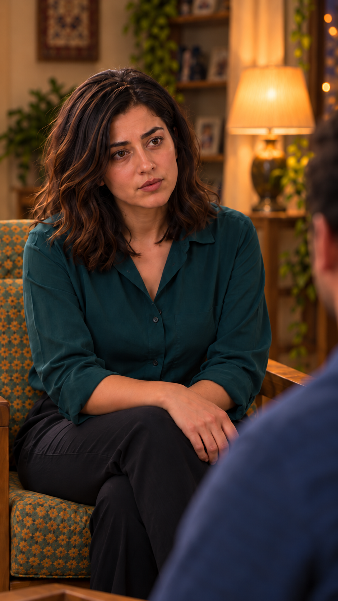
نزدیک نازلی از کنار سمت مادر، ثابت؛ دهان هیچ گویندهای در تصویر فعال نیست؛ نگرانی مهارشده۳/۵ برای سنجیدن پاسخ سامان؛ لب بسته، نگاه از محل مادر به سامان؛ تغییر کوچک در چشم و جمعشدن ملایم لب، بدون آه؛ بعد از پایان D14؛ صدای تازهای اضافه نشود. سامان جواب نداده و قولی نداده است؛ برش پس از فهم نگرانی
متن و بازی و وضعیت همین نما